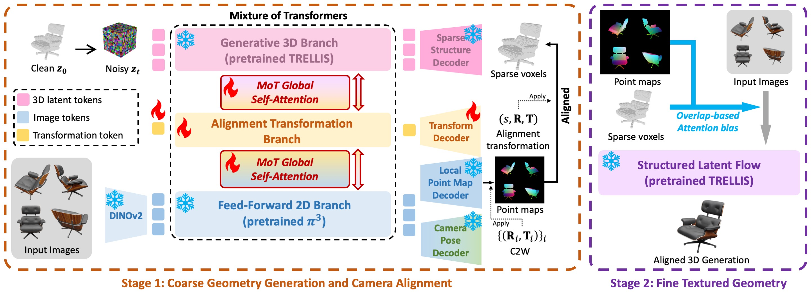
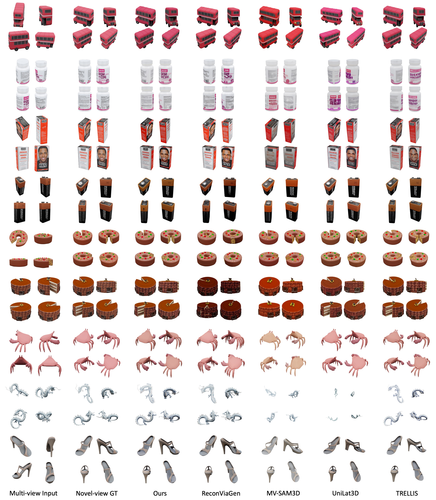
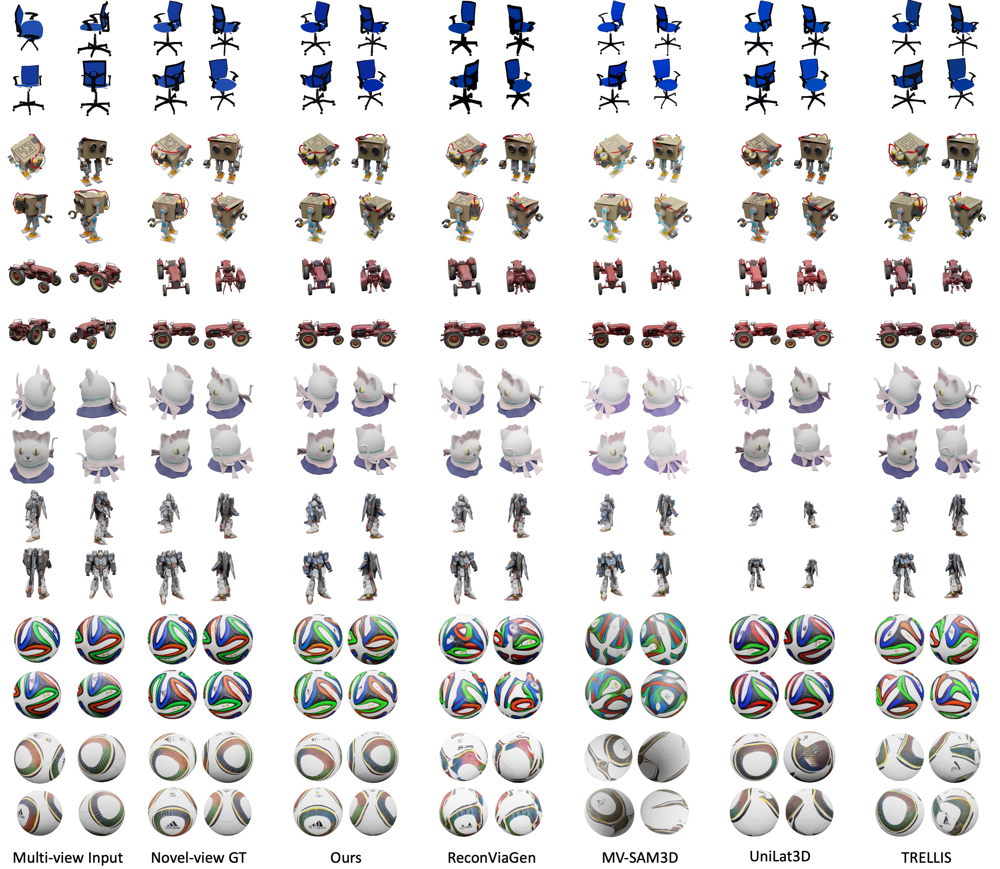
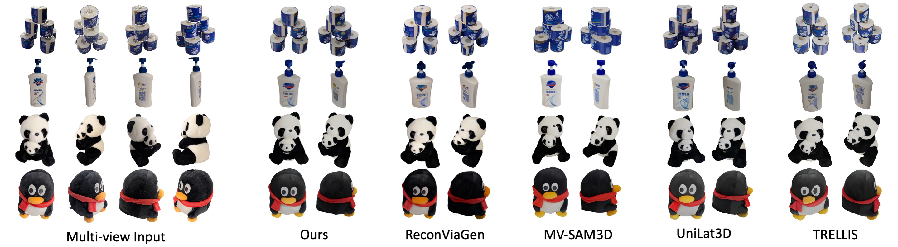

We adopt the Mixture-of-Transformers (MoT) to fuse the pixel-aligned feed-forward model Pi3 and the generative model TRELLIS, achieving sparse multi-view generative reconstruction with better input alignment.



